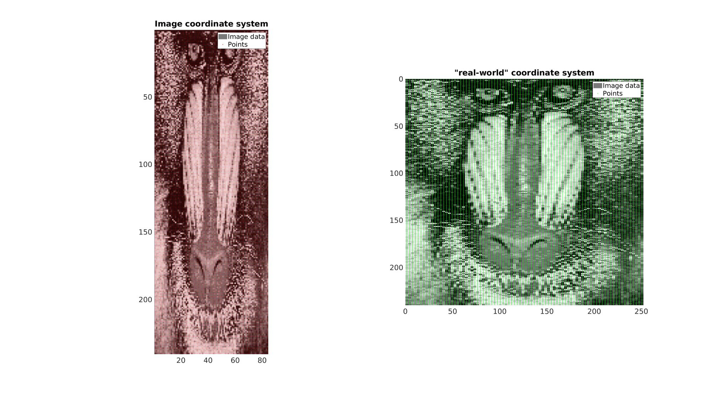
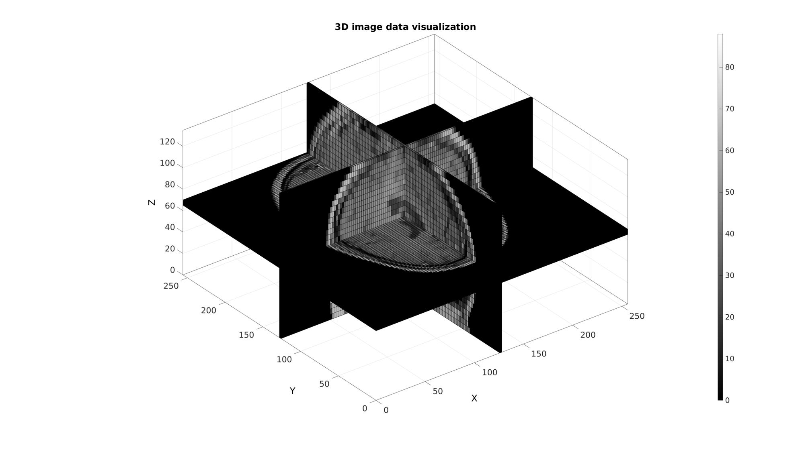

im2cart
Below is a demonstration of the features of the im2cart function
Contents
clear; close all; clc;
Syntax
[X,Y,Z]=im2cart(I,J,K,v);
[X,Y,Z]=im2cart(I,J,K);
[V_xyz]=im2cart(V_ijk,v);
[V_xyz]=im2cart(V_ijk);
[V_xyz]=im2cart(V_ij);
Description
This function converts the image coordinates I,J,K to the cartesian coordinates X,Y,Z using the voxel dimension v.
I,J,K can be scalars, vectors or matrices. v is a vector of length 3 where v(1), v(2) and v(3) correspond to the voxel dimensions in the x,y and z direction respectively.
This function maps the row, column, slice coordinates I,J,K to "real-world" Cartesian coordinates X,Y,Z based on: X=(J-0.5).*v(2); Y=(I-0.5).*v(1); Z=(K-0.5).*v(3);
Note that the columns relate to X while rows relate to Y.
A single coordinate array may also be specified whereby the columns define the I, J, and K coordinates. If a single output is requested the output will also consist of such an array whereby columns are the X, Y, and Z coordinates
Examples
Plot settings
cMap=gjet(250); faceAlpha1=1; faceAlpha2=0.65; fontSize=25;
Example: 2D image coordinate systems
In this example a 2D image with an anisotropic voxel (pixel) size is used. It is first visualized in image coordinates which, since voxel size is not taken in to account , appears stretcged. Next it is also visualized using "real-world" Cartesian coordinates which do take the real anisotropic voxel size into account (using im2cart). This image appears unstretched.
Get example image data
imageData=load('mandrill'); %Image data for photograph M=double(imageData.X); %Get gray scale intensity information M=M(1:2:end,1:6:end); %Reduce density of image and make anisotropic v=[1 3 1]; %example voxel size
Create row (I) and column (J) image coordinates for all voxel centers
[I,J]=ndgrid(1:1:size(M,1),1:1:size(M,2)); %Row and column coordinates K=ones(size(I)); %Slice coordinates P_IJ=[I(:) J(:) K(:)]; %The collected coordinate array
Use im2cart to convert to "Cartesian" or real world coordinates
P_XY=im2cart(P_IJ,v); %Real world coordinates.
Create patch data for plotting
%Get patch data [F,V,C]=im2patch(M,true(size(M)),'sk');
Use im2cart to convert to "Cartesian" or real world coordinates
V_XY=im2cart(V(:,[2 1 3]),v);
Visualize
cFigure; subplot(1,2,1); hold on; title('Image coordinate system'); hp1=gpatch(F,V,C,'none'); hp2=plotV(P_IJ(:,[2 1 3]),'r.','markerSize',5); legend([hp1,hp2],{'Image data','Points'}) axis ij; axis tight; axis equal; set(gca,'FontSize',fontSize); colormap gray; subplot(1,2,2); hold on; title('"real-world" coordinate system'); hp1=gpatch(F,V_XY,C,'none'); hp2=plotV(P_XY,'g.','markerSize',5); legend([hp1,hp2],{'Image data','Points'}) axis ij; axis tight; axis equal; set(gca,'FontSize',fontSize); colormap gray; drawnow;
Example: 3D image coordinate handling and visualization
Get example image data
load mri; M=squeeze(D); %example image data set v=[2 2 5]; %example voxel size, note voxels are ellongated in slice direction
Use im2patch to get coordinates of voxel data for plotting
%Defining row, column and slice indicices for slice patching sliceIndexI=round(size(M,1)/2); %(close to) middle row sliceIndexJ=round(size(M,2)/2); %(close to) middle column sliceIndexK=round(size(M,3)/2); %(close to) middle slice logicPlot=false(size(M)); logicPlot(sliceIndexI,:,:)=1; logicPlot(:,sliceIndexJ,:)=1; logicPlot(:,:,sliceIndexK)=1; %Get patch data [F,V,C]=ind2patch(logicPlot,M,'vb');
Use im2cart to scale coordinates based on voxel size. The patch data consists of a matrix array defining the faces, a matrix array defining the vertices and a vector for the colour data. The vertices are based on the image coordinates however they are formatted as: [X(:) Y(:) Z(:)]. X relates to columns, Y to rows and Z to slices.
% Convert image coordinates to cartesian coordinates
[V(:,1),V(:,2),V(:,3)]=im2cart(V(:,2),V(:,1),V(:,3),v);
Visualize
cFigure; title('3D image data visualization'); xlabel('X (mm)');ylabel('Y (mm)'); zlabel('Z (mm)'); hold on; gpatch(F,V,C); axisGeom(gca,fontSize); colormap(gray(250)); colorbar; camlight headlight; drawnow;

GIBBON www.gibboncode.org
Kevin Mattheus Moerman, gibbon.toolbox@gmail.com
GIBBON footer text
License: https://github.com/gibbonCode/GIBBON/blob/master/LICENSE
GIBBON: The Geometry and Image-based Bioengineering add-On. A toolbox for image segmentation, image-based modeling, meshing, and finite element analysis.
Copyright (C) 2019 Kevin Mattheus Moerman
This program is free software: you can redistribute it and/or modify it under the terms of the GNU General Public License as published by the Free Software Foundation, either version 3 of the License, or (at your option) any later version.
This program is distributed in the hope that it will be useful, but WITHOUT ANY WARRANTY; without even the implied warranty of MERCHANTABILITY or FITNESS FOR A PARTICULAR PURPOSE. See the GNU General Public License for more details.
You should have received a copy of the GNU General Public License along with this program. If not, see http://www.gnu.org/licenses/.